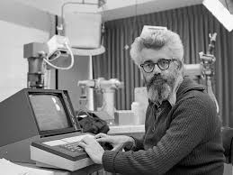

Введение
Джон Маккарти (англ. John McCarthy; 4 сентября 1927, Бостон — 24 октября 2011, Стэнфорд) — американский информатик, автор термина «искусственный интеллект» (1956), изобретатель языка Лисп (1958), основоположник функционального программирования, лауреат премии Тьюринга (1971) за огромный вклад в область исследований искусственного интеллекта.
Член Национальной академии наук США (1989). Родился в семье иммигрантов — ирландца Джона Патрика Маккарти и литовской еврейки Иды Глатт (1893—1957). Отец был профсоюзным деятелем, мать — журналисткой. Во время Великой депрессии семья была вынуждена часто менять место жительства, пока, наконец, отец Маккарти не нашёл работу в Лос-Анджелесе.
Рано проявил склонности к математике, в юности самостоятельно изучал её по университетским учебникам, которые использовались в расположенном неподалёку Калифорнийском технологическом институте. В результате, поступив в университет, смог сразу пропустить два первых года по математике. В 1948 году получил степень бакалавра математики в Калифорнийском технологическом институте, в 1951 году — степень Ph.D. по математике в Принстоне. После кратковременных должностей в Принстонском и Стэнфордском университетах, Дартмутском колледже и Массачусетском технологическом институте, стал профессором в Стэнфорде в 1962 году, где и оставался до ухода на пенсию в конце 2000 года.
„Моё хобби - не ходить на митинги в поддержку переработки отходов — экономит больше энергии, чем ваше увлечение этой переработкой.“